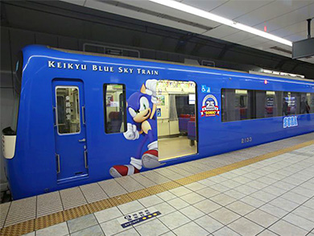
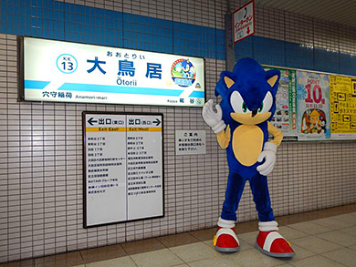
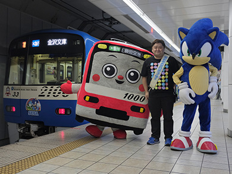
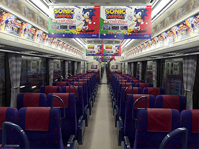
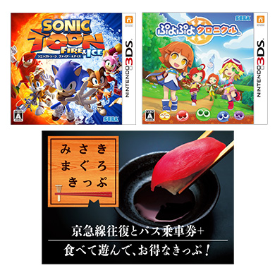
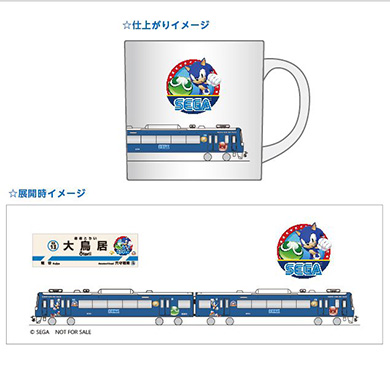

「京急セガトレイン」の運行を記念し、ツイッターへの写真投稿キャンペーンを実施！




2016年11月14日（月）より京急2100形「BLUE SKY TRAIN」を25周年を迎えた「ソニック」と「ぷよぷよ」のキャラクターをデザインしたラッピング電車「京急セガトレイン」として運行を開始いたしました！
「京急セガトレイン」の運行を記念し、11月14日（月）から12月17日（土）までの運行期間中、ツイッターへの写真投稿キャンペーンを実施！「京急セガトレイン」を写真撮影し、ツイッターへハッシュタグ「#京急セガトレインキャンペーン」をつけて投稿いただいた方の中から、抽選で25名様にゲームソフトやオリジナルマグカップを差し上げます。奮ってご応募ください。
賞品
※賞品は選べません

賞品【A】
ニンテンドー3DS用ソフト「ソニックトゥーン ファイアー＆アイス」・「ぷよぷよクロニクル」のセット＋「みさきまぐろきっぷ」×3名様

賞品【B】
「京急セガトレイン」オリジナルマグカップ ×22名様
| 応募期間 | 2016年11月14日（月）～ 12月17日（土） 23:59まで |
|---|---|
| 応募方法 | 「京急セガトレイン」を写真撮影し、ツイッターで「セガ公式（@SEGA_OFFICIAL）」をフォローの上、ハッシュタグ「#京急セガトレインキャンペーン」をつけて投稿ください。投稿いただくことで本キャンペーンへの応募完了となります。 |
| 当落通知方法 | 当選された方には応募締め切り後、2017年1月13日（金）までにキャンペーン事務局よりツイッターのダイレクトメッセージにてご連絡いたします。当選通知後1週間以内に賞品の発送に必要な情報（氏名・郵便番号・住所・電話番号）を事務局あてにご返信ください。当選通知後1週間以内にご連絡がない場合、当選が無効になりますので予めご了承下さい。当選者様から情報を受け取り後に賞品を発送致します。 |
| 注意事項 | ※応募期間中であれば何度でも応募可能ですが、重複して当選することはございません。 ※電車運行の運行を妨げるような行為、危険な場所・立ち入り禁止の場所での撮影はご遠慮ください。（当選を無効とさせていただく場合がございます。） ※投稿頂いた写真は、広告物や雑誌など販促活動に使用させていただく場合があります。2次利用の活用に承諾いただける方のみ、ご応募をお願いいたします。 ※プレゼントへの応募は，日本国内に在住している方限定とさせていただきます。 Twitterを非公開設定にしている場合はキャンペーン応募の対象外になります。 ※当選につきましては，公式アカウント（@SEGA_OFFICIAL）をフォローしている必要があります。（当選通知時にフォローされていない場合は，当選を無効とさせていただきます。） ※当選者の発表はTwitterのダイレクトメッセージの送信にて代えさせていただきます。 ※お客様のTwitterアカウントがダイレクトメッセージを受信できない状態の場合は当選無効とさせていただきます。 ※本キャンペーンに関してTwitterダイレクトメッセージでのお問い合わせは対応いたしかねます。 ※応募された方は当ページ記載事項に同意したとみなします。 ※個人情報の取り扱いに関しましては、株式会社セガホールディングスのプライバシーポリシーをご参照ください ※今回のキャンペーンでお預かりしたお客様の個人情報は、本キャンペーンに関連した抽選、賞品の発送および当社からのご連絡のためにのみ使用いたします。 ※15歳以下の方の応募につきましては、保護者の方の同意が必要です。 ※当選者様のご住所・転居先が不明、連絡不能、入力不備などの理由により賞品がお届けできない場合は、当選を無効とさせていただきます。 ※賞品を譲渡・転売しないことが、参加・当選の条件となります。それらが明らかになった場合、当選は取り消され、賞品をお返しいただく場合があります。 ※賞品の交換、換金、返品等には応じかねますので予めご了承下さい。 ※当社は、本キャンペーンへの参加およびご応募に関してお客様に発生した損害について、一切の責任を負いません。 ※賞品は箱に傷や凹みなどの損傷がある場合がございます。あらかじめご了承ください。 |
→「京急セガトレイン」の写真を撮ろう！Twitterキャンペーン